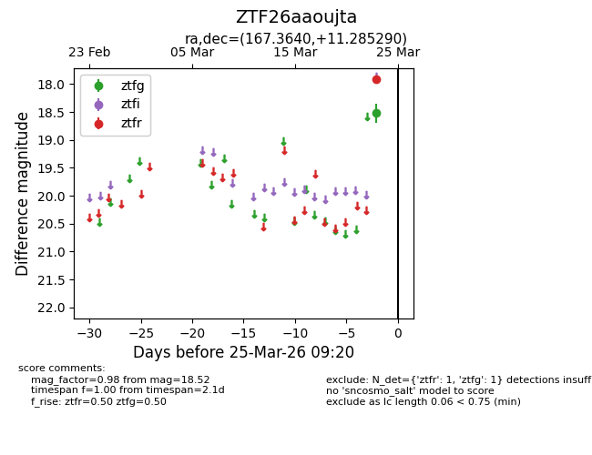
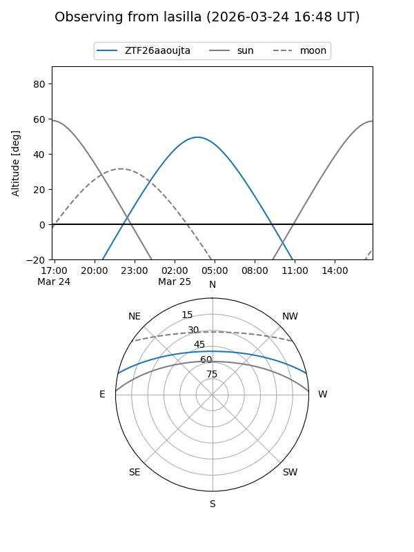
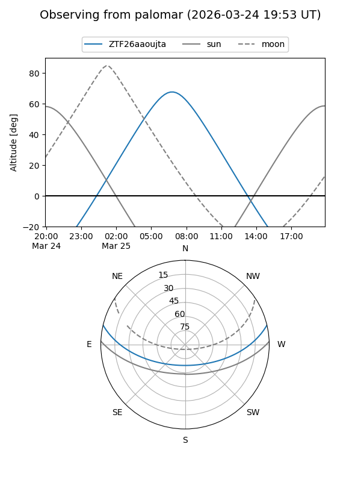

ZTF26aaoujta
Target ZTF26aaoujta at 2026-03-25 09:24
Aliases and brokers:
FINK: link
Lasair: link
ALeRCE: link
alt names
ZTF26aaoujta (ztf,fink_ztf)
Coordinates:
equatorial (ra, dec) = 167.3640,+11.28529
equatorial (HMS+DMS) = 11:09:27.37,+11:17:07.04
galactic (l, b) = (241.4598,+61.28518)
Flags:
Photometry:
last ztfg=18.52, ztfr=17.92
1 ztfg, 1 ztfr detections
Lightcurve

Visibility


Additional plots